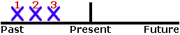
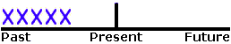
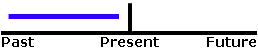

Past
Completed Action in the Past

I saw a movie yesterday.
A Series of Completed Actions
I finished work, walked to the beach, and found a nice place to swim.
Duration in Past
I lived in Brazil for two years.
Habits in the Past
I studied French when I was a child.
Past Facts or Generalizations
She was shy as a child, but now she is very outgoing.
Present
Facts or Generalizations

Cats like milk.
Repeated Actions

The train leaves every morning at 8 AM.
Scheduled Events in the Near Future

The train leaves tonight at 6 PM.
Now (Non-Continuous Verbs)

He needs help right now.
Future
"Will" to Express a Promise

I will call you when I arrive.
"Will" to Express a Voluntary Action
I will send you the information when I get it.
"Be going to" to Express a Plan
He is going to spend his vacation in Hawaii.
"Will" or "Be Going to" to Express a Prediction
John Smith will be the next President.
John Smith is going to be the next President.